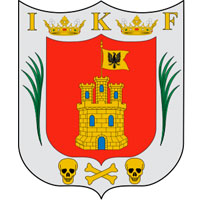

El 99.2 % de la superficie del estado presenta clima templado subhúmedo, el 0.6 % presenta clima seco y semiseco, localizado hacia la región este, el restante 0.2 % presenta clima frío, localizado en la cumbre de La Malinche. La temperatura media anual es de 14 °C. La temperatura máxima promedio es de alrededor de 25 °C y se presenta en los meses de abril y mayo. La temperatura mínima promedio es de 1.5 °C en el mes de enero. La precipitación media estatal es de 720 mm anuales; las lluvias se presentan en verano en los meses de junio a septiembre. En el estado de Tlaxcala la agricultura que se ejerce en su mayoría es de temporal y el clima templado subhúmedo de la región favorece el desarrollo de diversos cultivos como maíz, haba, frijol, lechuga, espinaca, amaranto, alfalfa, ajo, cebolla y col, entre otros. Tlaxcala cuenta únicamente con el 17 % de su superficie cubierta de vegetación natural. La otra parte son cultivos agrícolas, asentamientos humanos y dedicados a otro tipo de actividades, y es en las áreas naturales donde se localiza la mayor diversidad y abundancia de fauna. A la fecha se tienen identificadas 280 especies de aves, de las cuales 35 son aves canoras y de ornato. La más alta riqueza de fauna se encuentra en la región de La Malinche y en la región noroeste del estado. Respecto a los mamíferos, las especies más frecuentes son los conejos y tlacuaches, y entre las especies de poblaciones bajas se encuentran los coyotes, armadillos, mapaches y gato montés.La flora se encuentra comprendida de maguey, árboles frutales (ciruelo, chabacano, chirimoya, durazno, guayaba, higo, lima, limón, manzana, naranjo, nogal, pera, perón tejocote), uva y xoconochtle. Entre la fauna doméstica existen ganados vacuno, ovino, caprino, porcino, asnal y equino, aves de corral, perros y gatos. En cuanto a la fauna silvestre se halla, ardillas, armadillos, cacomixtle, conejo, coyote, liebre, murciélago, onza, rata casera y de campo, ratón, tejón, tlacuache, tuza, zorro, zorrillo, lechuza, lagartija, víbora de cascabel, cenzontle y zopilote. La cocina tlaxcalteca es, como otras cocinas mexicanas, una gastronomía mestiza, aunque con mayor influencia indígena enriquecida con ingredientes españoles que da forma a una variedad de sabores, aromas y colores. El pueblo tlaxcalteca fue una sociedad que por mucho tiempo se enfrentó al imperio mexica, dando como resultado un aislamiento y bloqueo comercial durante más de sesenta años que privó a los tlaxcaltecas de diversos ingredientes de otras provincias, tales como la sal marina y el cacao. Dicho bloqueo obligó a los tlaxcaltecas a aprovechar todos los recursos que tenían a su alcance. Un ejemplo es el tequesquite como sustituto de la sal, obtenido principalmente de la zona de Tequexquitla. La actividad económica tradicional agrícola de Tlaxcala ha dado paso, como en muchos otros estados del país, a la industrialización y al sector servicios. En la edición 2006 del Sistema de Cuentas Nacionales de México conducido por el Instituto Nacional de Estadística y Geografía, el Producto Interno Bruto del estado está conformado en un 50% por la industria manufacturera, destacando los giros de alimentos y bebidas; y el sector de servicios comunales, sociales y personales.
